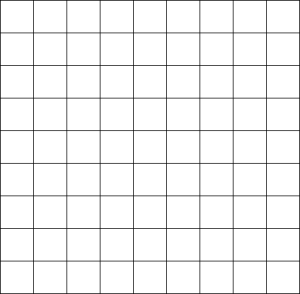
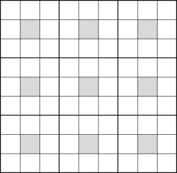

Usage
Running Omniscape
The following Julia code shows an example of how to run Omniscape after Omniscape.jl has been installed.
using Omniscape
run_omniscape("path/to/config/file.ini")file.ini is a file specifying input data paths and options for Omniscape. See this link for an example .ini file. The arguments specified in the .ini file are described in detail below.
Parallel Processing
Omniscape uses parallel processing by default, but currently, Julia requires that the number of parallel threads to use be specified an environment variable called JULIA_NUM_THREADS. This environment variable needs to be defined prior to launching Julia. See the following example code for how to do this.
Setting JULIA_NUM_THREADS and starting up Julia to use 4 threads:
Run the following in your terminal:
On Linux/Mac
export JULIA_NUM_THREADS=4
juliaOn Windows
set JULIA_NUM_THREADS=4
juliaArguments
Required arguments
resistance_file: The path to the resistance layer input. This file can be in ASCII (.asc) or GeoTiff (.tif) format. If the file is in .asc format, Omniscape will also detect and use any associated .prj file in the same directory to determine the projection of the input file. The same applies for all other inputs described below that may be in .asc format.
radius: A positive integer specifying the radius in pixels of the moving window used to identify sources to connect to each target.
project_name: The name of the project. Omniscape will create a directory called project_name in the directory from which you run Julia, and write any outputs to that directory. Supports the use of full path specification (e.g. path/to/directory).
If source_from_resistance (described below) is false:
source_file: The path to the source layer input. Must be an ASCII or GeoTIFF. This raster must have the same dimensions as resistance_file, and it is recommended that they have the exact same projection to ensure proper alignment. NoData values will be assigned a source strength of 0. Does not need to be provided if source_from_resistance = true.
Optional arguments
General options
block_size: An odd integer. Defaults to 1. An odd, positive integer specifying the side length for source layer blocking in target generation. The block size option coarsens the source strength surface for the purposes of identifying target values and assigning source strength values.
<<<<<<< HEAD <table border="0"><tr> <td> <figure> <img src='figs/sourcesblockof1.png' alt='missing' /> <figcaption><em>Block size of 1</em></figcaption> </figure> </td> <td> <figure> <img src='figs/sourcesblockof3.png' alt='missing' /> <figcaption><em>Block size of 3</em></figcaption> </figure> </td> </tr></table>
=======  
fd1b19533e0180597064f3c484adfd21d7a99698
source_from_resistance: One of true, false. Should a source layer be derived using the resistance layer? If true, sources are calculated as the inverse of the resistance layer, and therefore it is not recommended that your resistance layer contain values less than 1. Sources will be set to 0 for all cells with a resistance greater than r_cutoff (described below). Defaults to false.
resistance_file_is_conductance: One of true, false. Defaults to false. Specify whether the file specified by resistance_file is a conductance (rather than resistance) surface. Conductance is the inverse of resistance. Note that r_cutoff (an optional argument described below) must be in units of resistance even if a conductance file is supplied as input.
r_cutoff: The maximum resistance value a cell can have to be included as a source. Only applies when source_from_resistance = true. Defaults to Inf (which allows all cells to be considered as sources regardless of the resistance value).
buffer: A positive integer. Defaults to 0. Specifies an additional buffer distance beyond radius to clip the resistance and source layers to for each moving window iteration. Any source pixels beyond the radius but within the buffered area are set to 0. If 0, resistance and source layers will be clipped to a circle of size radius for each moving window iteration.
source_threshold: Positive number. Defaults to 0. Only pixels in the source layer greater than source_threshold will be included as sources.
calc_normalized_current: One of true, false. Defaults to false. Specify whether to calculate normalized current flow. Normalized current is calculated as raw current divided by flow potential. If true, a normalized current flow raster will be written to the project_name directory.
calc_flow_potential: One of true, false. Defaults to false. Specify whether to calculate flow potential. Flow potential calculates current flow in "null" conditions, where the resistance of the entire landscape is 1. If true, a flow potential raster will be calculated and written to the project_name directory. This can still be set to false even if calc_normalized_current = true if you want to avoid writing the flow potential raster to disk.
allow_different_projections: One of true, false. Defaults to false. If true, warnings about non-matching projections are suppressed.
connect_four_neighbors_only: One of true, false. Defaults to false. Circuitscape creates a graph (network) by connecting cells to their four or eight immediate neighbors. The default is eight (four cardinal and four diagonal neighbors). Set connect_four_neighbors_only to true if you want to connect cells to their four cardinal neighbors only.
Resistance reclassification
Omniscape.jl allows you to reclassify categorical resistance surfaces internally based on a user-provided reclass table. This allows the user to avoid reclassifying rasters manually in a GIS, and can streamline your workflow.
If instead of a resistance raster, you provide Omniscape a conductance raster, then conductance is what Omniscape will reclassify based on the provided reclass table.
reclassify_resistance: One of true, false. Defaults to false. Do you want Omniscape to reclassify your resistance/conductance raster using a reclass table that you provide?
reclass_table: If reclassify_resistance = true, the file path to the reclass table you wish to use. The reclass table is a two column, tab-separated .txt file. The first column contains the original resistance values in the resistance surface, and the second column specifies what those values should be changed to. Note that you don't need to include an entry for every value in your original raster. If you only want to reclassify 2 specific resistance values, then only include entries for those two values.
Example reclass_table.txt:
1 3
2 5
3 1
4 2
5 4write_reclassified_resistance: One of true, false. Defaults to false. Should the reclassified resistance/conductance raster be saved to the output folder?
Processing options
parallelize: One of true, false. Defaults to true. Specify whether to use parallel processing.
parallel_batch_size: Integer. Defaults to 10. The batch size (number of jobs) to send to each parallel worker. Particularly in cases where single solves are very fast, setting this to a larger number can reduce I/O overhead when scheduling/sending jobs to parallel workers. If set too high, then you will not be fully utilizing parallel workers.
precision: One of single, double. Defaults to double. Single precision uses less memory, but is less accurate than double precision. In certain cases (e.g. with extremelely large resistance values and/or extremely small source strengths), computations with single precision may be subject to numerical underflow, resulting in incorrect results. Use single precision with caution.
Output options
write_raw_currmap: One of true, false. Defaults to true. Save the raw cumulative current map to disk? Should always be set to true unless calc_flow_potential, calc_normalized_current, or both are true and you do not need the raw current output.
mask_nodata: One of true, false. Defaults to true. Specify whether to mask current flow outputs according to NoData values in resistance surface. (i.e. pixels in current flow outputs that line up with NoData values in resistance are set to no data if mask_nodata = true).
write_as_tif: One of true, false. Defaults to true. Should outputs be written in tif format? If false, outputs are written in .asc format.
Conditional connectivity options
conditional: One of true, false. Defaults to false. Should conditional source/target matching be used? That is, should a given target only be connected to sources that meet similarity conditions to the target? If false, none of the arguments described bellow are needed. If true, then gridded data with values for each pixel are used to compare targets and sources and determine which pairs should be connected according to user-specified criteria.
n_conditions: One of 1, 2. Defaults to 1. The number of conditions to use for conditional source/target matching.
If n_conditions = 1:
condition1_file: The file path to the data representing condition one in present day. Only needed if conditional = true. Must be an ASCII or GeoTIFF. This raster must have the same dimensions as resistance_file, and it is recommended that it also has the exact same projection to ensure proper alignment.
comparison1: One of within or equal. Defaults to within. How should conditions be compared when determining whether to connect a source/target pair. If within, then the value of condition 1 for the source must be within the following range, where target is the value at the target pixel or block: (target + condition1_lower, target + condition1_upper). condition1_lower and condition1_upper are explained further below. If equal, then the value at the source pixel must be equal to the value at the target pixel.
condition1_lower: Number. Only required if comparison1 = within. If condition1_lower = -1, then a source may have a condition 1 value up to 1 unit smaller than the target's value to be connected.
condition1_upper: Number. Only required if comparison1 = within. If condition1_upper = 1, then a source may have a condition 1 value up to 1 unit larger than the target's value and it will still be connected.
If n_conditions = 2:
condition2_file: The file path to the data representing condition two in present day. Only needed if conditional = true and n_conditions = 2. Must be an ASCII or GeoTIFF. This raster must have the same dimensions as resistance_file, and it is recommended that it also has the exact same projection to ensure proper alignment.
comparison2: One of within or equal. Defaults to within. Only applies if n_conditions = 2. How should conditions be compared when determining whether to connect a source/target pair. If within, then the value of condition 2 for the source must be within the following range, where target is the value at the target pixel or block: (target + condition2_lower, target + condition2_upper). condition2_lower and condition2_upper are explained further below. If equal, then the value at the source pixel must be equal to the value at the target pixel.
condition2_lower: Number. Only required if n_conditions = 2 and comparison1 = within. If condition2_lower = -1, then a source may have a condition 2 value up to 1 unit smaller than the target's value and it will still be connected.
condition2_upper: Number. Only required if n_conditions = 2 and comparison1 = within. If condition2_lower = 1, then a source may have a condition 2 value up to 1 unit larger than the target's value and it will still be connected.
Using future conditions:
compare_to_future: One of none, 1, 2, or both. Which condition(s) should compare the future condition in targets with present-day conditions in sources when determining which pairs to connect? For any condition(s) specified in this argument, two data layers are needed: one with future condition values for all pixels in the study area, and one for present day condition values for all pixels in the study area. Defaults to "none".
condition1_future_file: The file path to the data representing condition one in the future. Only needed if compare_to_future = 1 or compare_to_future = both. Must be an ASCII or GeoTIFF. This raster must have the same dimensions as resistance_file, and it is recommended that they have the exact same projection to ensure proper alignment.
condition2_future_file: The file path to the data representing condition two in the future. Only needed if n_conditions = 2 and compare_to_future = 2 or compare_to_future = both. Must be an ASCII or GeoTIFF. This raster must have the same dimensions as resistance_file, and it is recommended that they have the exact same projection to ensure proper alignment.